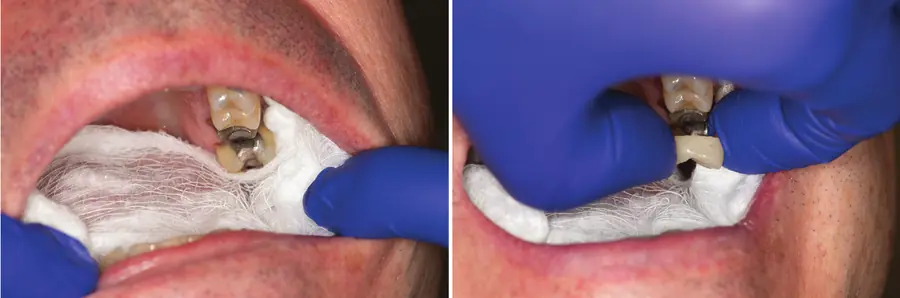

نسخه استخراجشده؛ ترجمه یا تأیید علمی انجام نشده است. وضعیت: captured
مردی ۴۵ ساله با گرفتگی مزمن بینی برای ترمیم کامپوزیت کلاس I مولر اول پایین آمده و زیر ورق رابردم نفسش بند میآید. یک رول پنبه در وستیبول باکال گذاشتهای، ولی هر بار که زبانش تکان میخورد، بزاق از سمت لینگوال روی حفره میآید. چه چیزی کم است؟
وقتی رابردم شدنی یا عملی نیست، رول پنبه، پد جاذب و گاز جایگزین آناند. رول را جلوی دهانهی مجرای بزاقی میگذاری تا بزاق را پیش از رسیدن به میدان بگیرد. با HVE یا ساکشن بزاق کنار رولها، بزاق باز هم کمتر میشود.
اشتباه رایج: کشیدن رول یا پد خشک از دهان. رول خشک به مخاط میچسبد و اپیتلیوم گونه، کف دهان یا لب را با خود میکَنَد. پیش از برداشتن، رول را با آب پوار خیس کن.

وقتی رابردم نیست و خطر بلعیدن یا آسپیراسیون شیء کوچک هست، throat shield لازم است؛ بهویژه در کار روی فک بالا. یک گاز ۵ × ۵ سانتیمتری را باز کن و روی زبان و بخش عقبی دهان پهن کن. هنگام امتحان یا برداشتن اینله و روکش، اگر رستوریشن از دستت بیفتد، روی گاز میافتد و بیرونش میآوری.